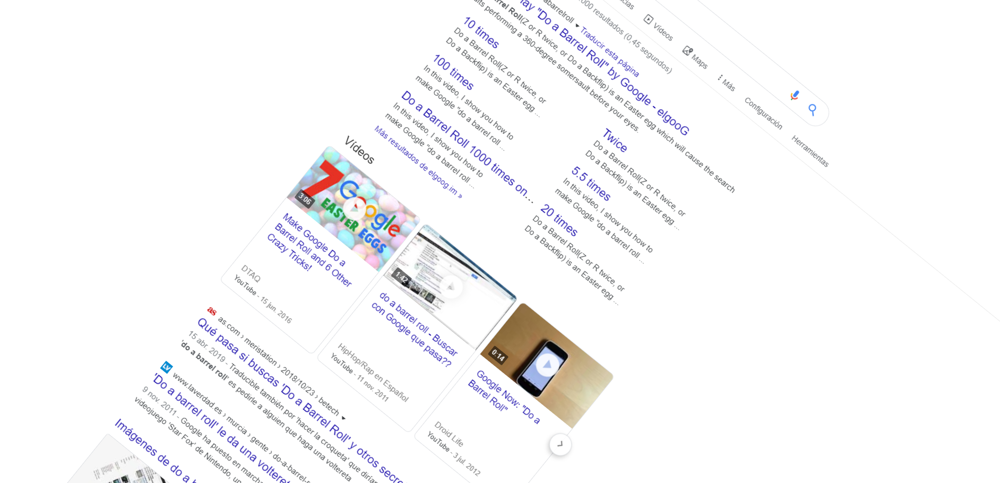

Google Chrome
Introducción
Hablaremos sobre Google Chrome (a partir de ahora sólo Chrome), un navegador web. Explicaremos varios de sus aspectos y características. Para entendernos bien rápido, los navegadores web son aquellos que nos ofrecen la posibilidad de “navegar” a través de Internet. Nos permiten acceder a cualquier página web a través de una dirección URL por medio de una interfaz gráfica intuitiva y amigable. También nos dan una gran variedad de opciones y según que navegador sea tendremos unas opciones u otras.
A destacar que Chrome es actualmente el navegador web más usado por la mayoría de los usuarios, con una diferencia además bastante notable. Podemos ver una gráfica de esta diferencia gracias a la página siguiente: http://gs.statcounter.com/
Criterios de clasificación de los Navegadores
Plataforma de ejecución
Las plataformas que pueden usar Chrome son prácticamente todas. Chrome, al ser el navegador más usado en la actualidad por la mayoría de los usuarios, su capacidad de adaptación se ha extendido a casi todas las plataformas para que pueda ser usado donde sea.
Bien podemos navegar con Chrome en un Linux, Windows o Mac, como podemos usarlo en nuestros dispositivos móviles sean Android o IOS.
Características del navegador aportadas de forma nativa.
Chrome por defecto nos ofrece una gran variedad de opciones de personalización y funcionalidades opcionales.
Entre todos los que tiene destacaremos algunos y al final nombraremos unos cuantos más que posee:
-
Creación de usuario y sincronización:
Tal vez una de sus funcionalidades más importantes. Chrome pertenece a Google y este navegador ha sido configurado para que se pueda iniciar sesión con una de nuestras cuentas de Google (cuentas de Gmail) directamente a nuestro navegador. Con esto conseguimos tener nuestra cuenta de Google vinculada a nuestro navegador y poder disfrutar así de la sincronización.
Con la sincronización podremos llevar nuestra cuenta de Google a cualquier navegador Chrome, por ejemplo, al navegador Chrome del equipo un poco anticuado de nuestro queridísimo amigo o queridísima amiga, conectarnos con nuestra cuenta Google ahí, sincronizar nuestra cuenta Google e importar todos los datos como marcadores o contraseñas a ese navegador. Y que no haya miedo ya que todos esos datos seguirán en ese otro ordenador mientras estemos con nuestra sesión de cuenta activa. En cuanto cerremos sesión, toda esa información se va con nosotros fielmente.
Otras de las ventajas al iniciar sesión en algún navegador Chrome es que contaremos con muchas más opciones que nombraremos un poco, pero tampoco haremos ahora especial mención de cada uno para no acabar con más de 100 páginas de información, porque de verdad que tiene bastante.
Al darle al listado de aplicaciones de nuestra cuenta Google podemos ver todo lo que se nos ofrece. Y todas estas aplicaciones se cargan directamente en nuestro navegador Chrome y por tanto se podría considerar cada una de estas opciones como funcionalidades de Chrome.
-
Administración de marcadores:
Herramienta que permite organizar de manera clara y ordenada cualquier sitio web que queramos tener guardado para su posterior uso.
Gracias a esta herramienta podemos guardar multitud de páginas que podremos ver más adelante o descubrir páginas que tenemos guardado desde hace ya mucho tiempo sin recordar ya el porqué, volverlas a abrir, rememorar la razón por la que fue guardada o quedarnos aún más perplejos.
Se puede organizar todo desde la propia barra de marcadores justo por debajo de la barra de URL, o también se puede organizar a través del administrador de marcadores de una manera más directa.
-
Gestor de descargas:
Nos permite realizar descargas de múltiples sitios webs y poder almacenar dichas descargas donde nosotros decidamos.
Chrome tiene su propia carpeta de Descargas por defecto, pero a través de la Configuración de Chrome podemos modificar su destino y ponerlo donde nosotros queramos.
-
Almacenamiento seguro de contraseñas:
Cuenta con su propio gestor de contraseñas. Esas contraseñas las guarda en los usuarios de Google, por tanto, dispondremos de gestor de contraseñas siempre y cuando tengo una sesión iniciada en nuestro navegador.
Chrome siempre nos pregunta educadamente si queremos guardar una nueva contraseña al crear una cuenta o acceder a una cuenta que ya teníamos creada, pero que no hemos guardado la contraseña o cuando actualizamos una contraseña.
Si tenemos ya alguna contraseña guardada, cuando toque tener que utilizarla, Chrome amablemente nos ofrecerá rellenar la contraseña automáticamente.
También disponemos de un administrador de contraseñas donde podremos ver todas las cuentas con sus respectivas contraseñas. Cuando estamos dentro de este administrador veremos que todas las contraseñas estarán cifradas y si queremos ver alguna de las contraseñas Chrome nos pedirá que volvamos a escribir nuestra contraseña de Google (esta ya no te la va a rellenar Chrome, porque si te rellena la contraseña automáticamente para ver el resto de contraseñas la seguridad sería un poco churro). Una vez la ponemos se nos revelará cada contraseña
-
Soporte de tecnologías Web
Soporta los estándares de la Web como CSS, Java, lenguajes scripting del cliente (JavaScript), XHTML (HTML con formato XML) y JSON. Vamos, que soporta de todo. Una pequeña demostración de HTML y CSS usando Bootstrap para que se pueda ver cómo lo soporta:
-
Licencia de software
Chrome es de código libre y su aplicación es gratuita es cualquier plataforma.
Personalización de la interfaz
-
Aspectos gráficos
Chrome nos ofrece una gran variedad de personalización. Si lo que más nos gusta es dejar nuestro navegador bien bonito, pero dedicarle bastante rato a buscar el tema que más nos convenza para que se vea como más nos satisfaga o que se vea horripilante porque quizás estemos junto a nuestros compañeros o compañeras de clase o trabajo y queremos chirriar sus ojos.
Además de la personalización de temas también podemos hacerlo con el tamaño de la fuente de nuestro navegador o realizar algún tipo de zoom.
-
Buscador y navegador predeterminado
Por defecto tiene a Google como buscador predeterminado, aunque nos permite cambiarlo por cualquier otro buscador. En cuanto al navegador predeterminando lo que hace es darnos la opción de seleccionar que sea Chrome nuestro querido navegador por defecto. Así, cada vez que abramos cualquier link desde donde sea, se nos abrirá en Chrome.
-
Opciones al cerrar y volver a abrir Chrome
Una pequeña lista de opciones de qué hacer cuando cerramos Chrome y lo volvemos a abrir.
-
Personalización de la privacidad y seguridad
Chrome nos permite personalizar, aunque sería quizás más apropiado decir “gestionar”, nuestra privacidad y seguridad. Entre todas las opciones haremos especial hincapié en la de Configuración del sitio Web.
Tenemos varias opciones que sin más nos preguntan si permitimos o no su acceso, además de que nos permite bloquear directamente su acceso para las páginas webs que le indiquemos.
Queda más de estas opciones, aunque más interesante destacaremos unos poco más que ofrecen distintas opciones. Como es las notificaciones. Veremos que como los demás nos pregunta si permitimos su acceso, pero también nos da una lista de sitios webs que nos mandan notificaciones siempre y cuando hayamos permitido previamente el envío de estas notificaciones.
Si le damos a uno de estos sitios webs que nos mandarán notificaciones, podremos ver que para ese sitio web en concretos también podremos cambiar casi todas las opciones de privacidad y seguridad.

Y por acabar esta sesión veamos qué pasa con las cookies, otra opción de privacidad y seguridad.
No solo tenemos la opción de permitir que los sitios guarden o lean datos de cookies, o bloquear algunos sitios webs, sino que además podemos ver todas nuestras cookies y borrar las que nos interesen o borrarlas todas directamente.
Arquitectura de referencia de un navegador web
Subsistema de renderizado
Un motor de renderizado es software que toma contenido marcado (como HTML, XML, archivos de imágenes, etc.) e información de formateo (como CSS, XSL, etc.) y luego muestra el contenido ya formateado en la pantalla de aplicaciones. El motor “pinta” en el área de contenido de una ventana, la cual es mostrada en un monitor o una impresora. Los motores de renderizado se usan típicamente en navegadores web, clientes de correo electrónico, u otras aplicaciones que deben mostrar y editar contenidos web.
Chrome utilizaba anteriormente WebKit, hasta que Google desarrolló Blink que es su actual motor de renderizado. Blink fue anunciado por Google en abril de 2013, a partir de una bifurcación del proyecto WebKit. Es utilizado por varios navegadores: Chromium, Chrome, Opera, Vivaldi, Maxthon y Microsoft Edge (a partir de 2019).
Subsistema de comunicaciones
HTTP HTTPS, FTP para transferencia de archivos.
Subsistema de persistencia de datos.
Los métodos de almacenamiento de las apps web se pueden analizar de acuerdo con el ámbito de datos persistentes.
-
Persistencia de sesión: Los datos de esta categoría se conservan siempre y cuando haya una sesión web o pestaña del navegador activa. Un ejemplo de un mecanismo de almacenamiento con persistencia de sesión es la Session Storage API.
-
Persistencia de dispositivo: Los datos de esta categoría se conservan entre sesiones y pestañas/ventanas del navegador dentro de un dispositivo. Un ejemplo de un mecanismo de almacenamiento con persistencia de dispositivo es la Cache API.
-
Persistencia global: Los datos de esta categoría se conservan entre sesiones y dispositivos. Así, se convierte en la forma más robusta de persistencia de datos. Un ejemplo de un mecanismo de almacenamiento con persistencia global es Google Cloud Storage.
Intérprete de JavaScript
Chrome V8 es un motor de código abierto para JavaScript creado por Google. Está escrito en C++ y es usado en Chrome desde el 2019.
Parser XML
La creación del Document Object Model o DOM es una de las innovaciones que más ha influido en el desarrollo de las páginas web dinámicas y de las aplicaciones web más complejas.
DOM permite a los programadores web acceder y manipular las páginas XHTML como si fueran documentos XML. De hecho, DOM se diseñó originalmente para manipular de forma sencilla los documentos XML.
A pesar de sus orígenes, DOM se ha convertido en una utilidad disponible para la mayoría de lenguajes de programación (Java, PHP, JavaScript) y cuyas únicas diferencias se encuentran en la forma de implementarlo.
Secretos de Google
Para finalizar veamos unos cuantos secretitos que tiene Google según lo que busquemos üòÅ.
Según lo que busquemos en el buscador de Google podremos acceder a algún huevo de pascua (Easter Egg).
Vamos a conocer algunos.
1. Do a barrel roll
Al buscar estas palabras toda la pantalla dará una vuelta.
2. askew
Al escribirlo, hará que la pantalla se quede torcida como si estuviera "tildada".
3. atari breakout
Al escribir "atari breakout" e ir a "imágenes", la búsqueda se convertirá en un juego, ¡incluso con puntuación!
4. super mario bros
Cuando buscamos al bueno de Mario, tendremos a la derecha una cajita característica que nos dará monedas al hacerle click.
5. graph for sin(x) + cos(y)
Con el comienzo de "graph for " y una función, Google nos muestra gráficamente la función.
6. La vida
Al introducir "the answer to life, the universe and everything" Google calculará que es 42. Si entiendes la referencia estar√© orgulloso de ti üòÅ
7. <blink>
Literalmente "parpadear". Veremos como esa palabra parpadea cada vez que sale.
8. Pac Man
Si escribimos "pac man doodle" podremos jugar desde nuestro propio navegador a un pequeño emulador de Pac Man,
9. Tic Tac Toe
Uno de tantos juegos que nos ofrece Google. A ver si conseguimos garnale al menos una vez ü§ó.
10. Lanzar una moneda
¿Una decisión u otra? Dejemos que Google decida lanzando una moneda.
11. Tirar un dado
Un dado o varios, además diferentes dados. En un momento tenemos tantos dados como queramos o necesitemos.
12. Recursión
Chiste puro de programador. Si buscamos "recursi√≥n" nos preguntará si quisimos decir "recursi√≥n", link que nos mandar√≠a exactamente al mismo lugar. Se entiende, ¬øverdad üòã?
13. Sonic the hedgehog
A la derecha estará un Sonic muy simpático que interactuará con nuestros clicks. Y tras varios clicks habrá una sorpresa.
14. Thanos
¿Qué sucede cuando Thanos chasquea los dedos? Si le hacemos click a su guante lo averiguaremos (o recordaremos).